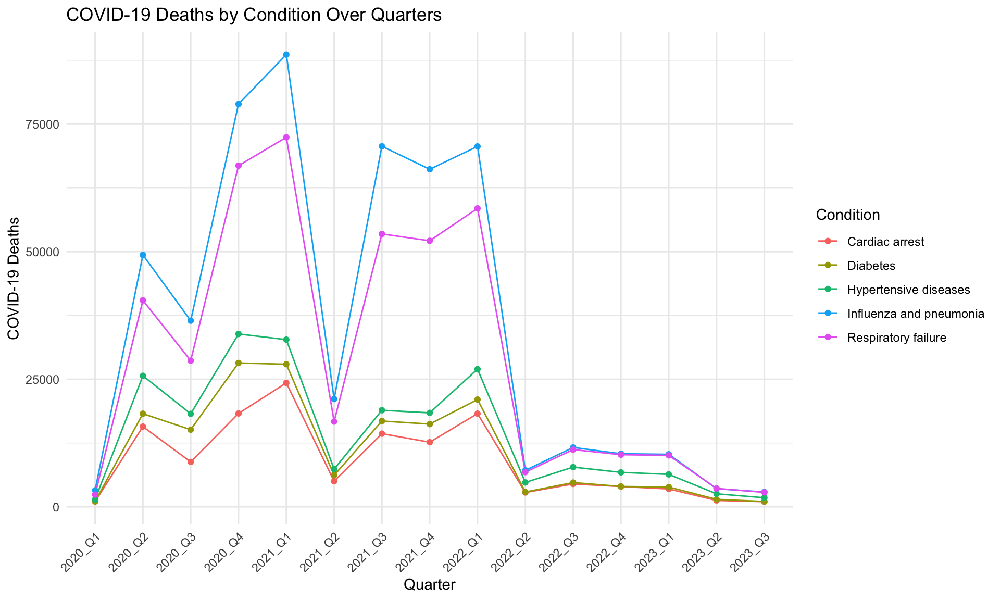
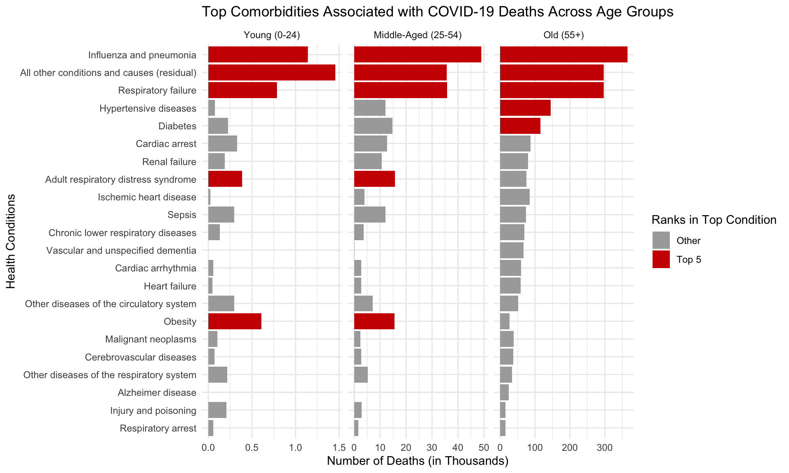

Code
# Load necessary libraries
library(ggplot2)
library(dplyr)
library(gganimate)
library(lubridate)
library(ggalluvial)
library(readr)
library(tidyr)
library(plotly)
library(png)
library(gifski)# Load necessary libraries
library(ggplot2)
library(dplyr)
library(gganimate)
library(lubridate)
library(ggalluvial)
library(readr)
library(tidyr)
library(plotly)
library(png)
library(gifski)covid_data <- read.csv("preproc_covid.csv")
covid_data$Start.Date <- as.Date(covid_data$Start.Date,
format = "%m/%d/%Y")
covid_data$End.Date <- as.Date(covid_data$End.Date,
format = "%m/%d/%Y")# Filter the COVID data to include only United States data,
# aggregated by month for all age groups, specifically for the COVID-19 condition group.
us_data_monthly <- covid_data %>%
filter(
State == "United States",
Group == "By Month",
Age.Group == "All Ages",
Condition.Group == 'COVID-19'
)
date_breaks <- seq(as.Date("2020-01-01"), as.Date("2023-09-01"), by = "month")
# Creating the plot
g <- ggplot(us_data_monthly, aes(x = Start.Date, y = COVID.19.Deaths)) +
geom_line() +
geom_point() +
annotate("rect", xmin = as.Date("2020-12-01"), xmax = as.Date("2021-2-01"), ymin = -Inf, ymax = Inf, fill = "royalblue", alpha = 0.2) +
annotate("rect", xmin = as.Date("2021-12-01"), xmax = as.Date("2022-2-01"), ymin = -Inf, ymax = Inf, fill = "royalblue", alpha = 0.2) +
annotate("rect", xmin = as.Date("2022-12-01"), xmax = as.Date("2023-2-01"), ymin = -Inf, ymax = Inf, fill = "royalblue", alpha = 0.2) +
annotate("rect", xmin = as.Date("2020-06-01"), xmax = as.Date("2020-8-01"), ymin = -Inf, ymax = Inf, fill = "orange1", alpha = 0.2) +
annotate("rect", xmin = as.Date("2021-06-01"), xmax = as.Date("2021-8-01"), ymin = -Inf, ymax = Inf, fill = "orange1", alpha = 0.2) +
annotate("rect", xmin = as.Date("2022-06-01"), xmax = as.Date("2022-8-01"), ymin = -Inf, ymax = Inf, fill = "orange1", alpha = 0.2) +
annotate("rect", xmin = as.Date("2023-06-01"), xmax = as.Date("2023-8-01"), ymin = -Inf, ymax = Inf, fill = "orange1", alpha = 0.2) +
scale_x_date(breaks = date_breaks, date_labels = "%Y-%m") +
labs(
title = "Monthly COVID-19 Deaths in the US",
x = "Month-Year",
y = "Total Deaths",
subtitle = "Orange = Summer Months \nBlue = Winter Months"
) +
theme_minimal() +
theme(axis.text.x = element_text(angle = 90, hjust = 1)) # Rotate the x-axis labels for better readability
# Print the plot
print(g)The graph above is a time series line chart which illustrates the monthly death toll from the start of the pandemic in early 2020 through to the third quarter of 2023 in the United States. It is a representation of the pandemic’s progression over time, displaying large fluctuations in monthly death counts in the years 2020-2021, and stabilizing in 2022. It is apparent from the seasonal color-coding—blue for winter months and orange for summer months—that there is a recurring pattern in the data.
We observe an increase in COVID-19 deaths during both summer and winter months, with a more pronounced increase in the winter. The increase during the winter months, may be influenced by several factors:
Indoor Gathering: The colder weather drives people indoors, where the virus can spread more easily due to close contact and poor ventilation.
Seasonal Viruses: The winter months coincide with the flu season, where other respiratory viruses are also prevalent, potentially worsening COVID-19 cases.
Holiday Seasons: Winter months include holidays (Christmas, New Years, etc) that typically involve family gatherings and increased social interaction, making it more likely for the virus to spread.
Conversely, during summer, while outdoor activities may generally reduce the transmission rate compared to winter, we still observe increases in deaths. This could be due to:
Social Activities: Summer holidays and events can result in gatherings and increased contact among individuals, leading to spikes.
Air Conditioning: Increased use of air conditioning during hot months can lead to similar indoor circulation patterns as in winter, facilitating the spread of the virus.
We have observed a recurring pattern in COVID-19 deaths over time, with seasonal factors playing a notable role in the fluctuation of death rates. While time allows us to track flow of the pandemic’s impact, geography provides another critical aspect for understanding the spread and toll of the virus.
To do an interactive Choropleth of COVID-19 deaths across US states in Plotly, we need to obtain the 2-letter abbreviations, which can be downloaded in this github repo.
For death rate, we used the standard way of calculating “The number of deaths per 100,000 total population” as noted from CDC’s website. We’ll also compare our death rate Choropleth maps to the ones from this official source.
# 2020
data=read.csv("covid_with_population.csv")
geo_df20 = data |> filter(Year==2020)
# # sanity check: year should all be 2020
# geo_df20$Year |> unique()
# # sanity check: for Alabama, all conditions' population should be the same
# geo_df20 |> subset(State=="Alabama")
# # check Alabama for covid
# geo_df20 |> subset(State=="Alabama" & Condition.Group=="COVID-19" )
# filter data: only select covid19, ages except all ages, states != US
geo_df20 = geo_df20 |> subset(Age.Group!="All Ages" & Condition.Group=="COVID-19" & State!="United States")
# geo_df20$State |> unique() |> length()
# for each state, calculate total population & all covid deaths
aggr_20=geo_df20 |> aggregate(cbind(COVID.19.Deaths,TotalPopulation) ~ State, FUN = sum,na.action = na.pass)
# aggr_20$State |> unique() |> length()
# aggr_20 |> filter(State=="New York City" | State=="New York")
# add NYC to NY
aggr_20$COVID.19.Deaths[aggr_20$State == "New York"] <- aggr_20$COVID.19.Deaths[aggr_20$State == "New York"]+aggr_20$COVID.19.Deaths[aggr_20$State == "New York City"]
## sanity check
# aggr_20 |> filter(State=="New York City" | State=="New York")
# calculate rate
aggr_20$death_rate=round(aggr_20$COVID.19.Deaths/(aggr_20$TotalPopulation/100000), digits = 1)
# aggr_20
#import state abbrev
df_states=read_csv("states.csv")
# aggr_20$State |> unique() |> length()
# df_states$State |> unique() |> length()
# join state codes
plot_df_20 <- aggr_20 %>% left_join(df_states,by="State")
# # check is there's nan
# subset(plot_df_20,is.na(Abbreviation))
# drop nan
plot_df_20=plot_df_20 |> drop_na(Abbreviation)
#plot_df_20
# Year 2021
geo_df21=data |> filter(Year==2021)
# # sanity check: year should all be 2021
# geo_df21$Year |> unique()
# # sanity check: for Alabama, all conditions' population should be the same
# geo_df21 |> subset(State=="Alabama")
# # check Alabama for covid
# geo_df21 |> subset(State=="Alabama" & Condition.Group=="COVID-19" )
# filter data: only select covid19, ages except all ages, states != US
geo_df21 = geo_df21 |> subset(Age.Group!="All Ages" & Condition.Group=="COVID-19" & State!="United States")
# geo_df21$State |> unique() |> length()
# for each state, calculate total population & all covid deaths
aggr_21=geo_df21 |> aggregate(cbind(COVID.19.Deaths,TotalPopulation) ~ State, FUN = sum,na.action = na.pass)
# aggr_21$State |> unique() |> length()
# aggr_21 |> filter(State=="New York City" | State=="New York")
# add NYC to NY
aggr_21$COVID.19.Deaths[aggr_21$State == "New York"] <- aggr_21$COVID.19.Deaths[aggr_21$State == "New York"]+aggr_21$COVID.19.Deaths[aggr_21$State == "New York City"]
# # sanity check
# aggr_21 |> filter(State=="New York City" | State=="New York")
# calculate rate
aggr_21$death_rate=round(aggr_21$COVID.19.Deaths/(aggr_21$TotalPopulation/100000), digits = 1)
# aggr_21
#import state abbrev
df_states=read_csv("states.csv")
# aggr_21$State |> unique() |> length()
# df_states$State |> unique() |> length()
# join state codes
plot_df_21 <- aggr_21 %>% left_join(df_states,by="State")
# # check is there's nan
# subset(plot_df_21,is.na(Abbreviation))
# drop nan
plot_df_21=plot_df_21 |> drop_na(Abbreviation)
#plot_df_21
# create plots
#common
# give state boundaries a white border
l <- list(color = toRGB("white"), width = 2)
# specify some map projection/options
g <- list(
scope = 'usa',
projection = list(type = 'albers usa'),
showlakes = TRUE,
lakecolor = toRGB('white')
)
# find min and max values for plot scale
#c(plot_df_20$death_rate,plot_df_21$death_rate) |> min()
#c(plot_df_20$death_rate,plot_df_21$death_rate) |> max()# plot
m <- list(
l = 5,
r = 5,
b = 5,
t = 40,
pad = 4
)
# 2020 plot
plot_df_20$hover <- with(plot_df_20, paste(State, '<br>', "Death Rate:", death_rate, '<br>', "Death Count:",COVID.19.Deaths))
fig_20 <- plot_geo(plot_df_20, locationmode = 'USA-states')
fig_20 <- fig_20 %>% add_trace(
z = ~death_rate, locations = ~Abbreviation, text = ~hover,
color = ~death_rate, colors = 'Purples',
zmin=20, zmax=230
)
fig_20 <- fig_20 %>% colorbar(title = "death rate <br> (per 100,000 population)")
fig_20 <- fig_20 %>% layout(
title = '2020 US COVID-19 Death Rate',
geo = g,
autosize = T, margin = m
)
# 2021 plot
plot_df_21$hover <- with(plot_df_21, paste(State, '<br>', "Death Rate:", death_rate, '<br>', "Death Count:",COVID.19.Deaths))
fig_21 <- plot_geo(plot_df_21, locationmode = 'USA-states')
fig_21 <- fig_21 %>% add_trace(
z = ~death_rate, locations = ~Abbreviation, text = ~hover,
color = ~death_rate, colors = 'Purples',
zmin=20, zmax=230
)
fig_21 <- fig_21 %>% colorbar(title = "death rate <br> (per 100,000 population)")
fig_21 <- fig_21 %>% layout(
title = '2021 US COVID-19 Death Rate',
geo = g,
autosize = T, margin = m
)
fig_20fig_21In examining the geographical distribution of COVID-19 death rates across the United States in 2020 and 2021, we observe regional variations. During 2020, higher death rates were observed in the Northeastern and Midwestern states, with New Jersey, New York, North Dakota, and South Dakota exhibiting higher figures. This could potentially reflect the initial outbreak hotspots. The Southern states presented varied death rates, generally hovering around an average of 120, while the Western states showed lower death rates.
In 2021, a shift is evident. The Southern states, previously having moderate rates, show a significant increase in death rates. This illustrates the dynamic nature of COVID-19, potentially influenced by varying public health policies, vaccine rollouts, and virus variants. Meanwhile, the Northeastern and Midwestern states, which initially had the highest death rates in 2020, showed a decrease in death rates. This decrease could indicate the effectiveness of public health measures and heightened community awareness. Moreover, it’s noteworthy to highlight the case of Vermont, which stands out for its consistently low death rates in both 2020 and 2021.
It is also worth noting that the state-wise patterns in our maps are quite similar to the ones from CDC’s website. There may be numerical discrepancies in both death rate and death count: as mentioned earlier, our annual population estimates and annual COVID death have different start and end months which may contribute to some deviations, the official source notes that its calculation of death rate is “adjusted for differences in age-distribution and population size”.
Having examined the geographical distribution of COVID-19 death rates across various regions, we will now extend our analysis to understand how the pandemic has impacted different age groups.
age_group_over_time <- covid_data %>%
filter(State == "United States",
Group == "By Month",
Condition.Group == 'COVID-19') %>%
filter(!Age.Group %in% c("Not stated", "All Ages"))
p <- ggplot(
age_group_over_time,
aes(Start.Date, COVID.19.Deaths, group = Age.Group, color = factor(Age.Group))
) +
geom_line() +
scale_color_viridis_d() +
labs(x = "Time Period", y = "COVID-19 Deaths", title='Monthly COVID-19 Deaths Across Age Groups') +
theme(legend.position = "right")
p +
geom_point() +
transition_reveal(Start.Date)The graph above shows the monthly death toll within specific age cohorts. It is evident from the visualization that the virus has not affected age groups uniformly. Each age group exhibits distinct peaks and valleys, indicative of the waves of the pandemic. The highest peaks correspond to the older age groups, particularly those aged 65 and above, while the lowest peaks correspond to youngest age group, 0-24.
# Filter the COVID data to include only US data for the 'COVID-19' condition group,
# and exclude unspecified or 'All Ages' age groups. Then, create a new categorical variable
# based on age to separate data into '65 and Older' and 'Under 65'.
age_group_data <- covid_data %>%
filter(State == "United States",
Group == "By Month",
Condition.Group == 'COVID-19') %>%
filter(!Age.Group %in% c("Not stated", "All Ages")) %>%
mutate(Over_Under_65 = ifelse(Age.Group %in% c("65-74", "75-84", "85+"),
"65 and Older",
"Under 65"))
# Define the start and end dates for the period of interest.
start_date <- as.Date("2020-04-01")
end_date <- as.Date("2022-09-01")
# Group data by month and age category, and summarize total deaths.
# Then filter the data to include only the dates within the defined period.
monthly_deaths_age_group <- age_group_data %>%
group_by(Start.Date, Over_Under_65) %>%
summarize(TotalDeaths = sum(COVID.19.Deaths, na.rm = TRUE)) %>%
ungroup() %>%
filter(between(Start.Date, start_date, end_date))
# Convert the 'Over_Under_65' column to a factor with specified levels for proper ordering in the plot.
monthly_deaths_age_group$Over_Under_65 <- factor(monthly_deaths_age_group$Over_Under_65,
levels = c("Under 65", "65 and Older"))
# Create a sequence of breaks for the x-axis (dates).
date_breaks <- seq(start_date, end_date, by = "month")
# Create the bar chart
age_bar_chart <- ggplot(monthly_deaths_age_group, aes(x = Start.Date, y = TotalDeaths, fill = Over_Under_65)) +
geom_bar(stat = "identity", position = position_dodge()) +
# Annotate periods of interest with colored rectangles
annotate("rect", xmin = as.Date("2021-06-01"), xmax = as.Date("2021-12-01"), ymin = -Inf, ymax = Inf, fill = "yellow", alpha = 0.2) +
annotate("rect", xmin = as.Date("2021-12-01"), xmax = as.Date("2022-10-01"), ymin = -Inf, ymax = Inf, fill = "orange", alpha = 0.2) +
# Add vertical lines to mark specific events
geom_vline(xintercept = as.Date("2020-12-15"), linetype = "dotted", color = "blue", size = 1) +
geom_vline(xintercept = as.Date("2021-09-22"), linetype = "dotted", color = "blue", size = 1) +
# Add text annotations for vaccine approvals and variant emergence
annotate("text", x = as.Date("2020-10-15"), y = 50000, label = "First vaccine approved", color = "black", size = 4, vjust = -1) +
annotate("text", x = as.Date("2021-7-22"), y = 50000, label = "First booster approved", color = "black", size = 4, vjust = -1) +
annotate("text", x = as.Date("2021-8-01"), y = 80000, label = "Delta variant", color = "red", size = 4, vjust = -1) +
annotate("text", x = as.Date("2022-4-15"), y = 80000, label = "Omicron variants", color = "red", size = 4, vjust = -1) +
labs(title = "Monthly COVID-19 Deaths in the US (Over and Under 65)",
x = "Time",
y = "Total Deaths",
fill = "Age Group") +
# Format the x-axis with the predefined date breaks
scale_x_date(breaks = date_breaks, date_labels = "%Y-%m") +
theme_minimal() +
theme(axis.text.x = element_text(angle = 90, hjust = 1))
# Print the plot
age_bar_chartAs seen previously, age has been a determinant factor in COVID-19 mortality, especially when comparing the death counts in age groups above and below 65. The above is a stacked bar chart displaying monthly COVID-19 deaths in the United States, categorized by age groups: under 65 and 65 and older. Key milestones such as the approval of the first COVID-19 vaccine, the emergence of the Delta variant, the approval of the first booster, and the arrival of Omicron variants are marked on the timeline.
Impact of Vaccinations and Booster: There is a noticeable decrease in deaths following the approval of the first vaccine, especially in the 65 and older age group, which likely received priority for vaccinations. We can see similar patterns after the approval and subsequent administration of booster shots. This suggests that vaccines and booster have had a positive impact in reducing COVID-19 mortality.
Variant-Related Surges: Although vaccinations have helped in reducing COVID-19 mortality, we see noticeable surges in deaths after emergence of the Delta and Omicron variants. This indicates the significant challenges posed by new variants, which can be more transmissible or potentially more fatal. The spikes in deaths corresponding to these variants underscore the ongoing need for adaptation in public health responses.
Vulnerability of Older Adults: The data consistently shows that older age groups are more impacted by COVID-19.
# Load COVID-19 data with population and filter it for the United States,
# excluding 'All Ages' category, and then group by 'Age.Group'.
age_group_death_and_pop <- read_csv("covid_with_population.csv") %>%
filter(State == "United States",
Condition.Group == 'COVID-19',
Age.Group != 'All Ages') %>%
group_by(Age.Group) %>%
summarize(COVID.19.Deaths = sum(COVID.19.Deaths, na.rm = TRUE),
TotalPopulation = sum(TotalPopulation, na.rm = TRUE))
# Calculate the proportion of COVID-19 deaths and the proportion of the total population
# for each age group.
age_group_death_and_pop <- age_group_death_and_pop %>%
mutate(
ProportionDeaths = COVID.19.Deaths / sum(COVID.19.Deaths),
ProportionPopulation = TotalPopulation / sum(TotalPopulation)
)
# Reshape the data to long format for plotting.
# This creates a new column 'Category' for plotting purposes.
long_data <- age_group_death_and_pop %>%
pivot_longer(
cols = c("ProportionDeaths", "ProportionPopulation"),
names_to = "Category",
values_to = "Proportion"
) %>%
mutate(Category = factor(Category, levels = c("ProportionPopulation", "ProportionDeaths")))
# Create a stacked bar chart to visualize the proportions.
# The chart will have two panels (facets) side by side for each category
# (ProportionPopulation and ProportionDeaths).
ggplot(long_data, aes(x = Category, y = Proportion, fill = Age.Group)) +
geom_bar(stat = "identity", position = "fill") +
facet_wrap(~Category, ncol = 2, scales = "free_x") +
theme_minimal() +
labs(
title = "Population and Death Proportions Across Age Groups (2020-2021)",
fill = "Age Group"
) +
scale_y_continuous(labels = scales::percent_format(accuracy = 1)) +
theme(
panel.spacing.x = unit(0, "lines"), # Remove space between facets
strip.text = element_blank() # Remove facet labels for a cleaner look
)
The above is a bar chart comparing the proportion of the population to the proportion of COVID-19 deaths across various age groups for the years 2020-2021. The left side of the chart displays the composition of the general population across age cohorts, while the right side shows the corresponding proportions of COVID-19 related deaths. The bar charts highlight the disproportionate impact of COVID-19 on different age groups. As we move to older age groups, the disparity becomes apparent: the proportion of deaths attributed to these groups exceeds their representation in the overall population. This disparity grows more pronounced with older age, illustrating the increased risk of older individuals to COVID-19.
So far, the graphs we’ve examined illustrates how COVID-19 mortality rates rise with age, revealing that the older population are most impacted. The disproportionality of these figures compel us to look beyond age and delve into the underlying medical conditions that may have played a role in contributing these moralities.
# Filter the data to include only the total number of cases for all ages in the United States for the years 2020 and 2021
health_data_all_ages <- covid_data %>%
filter(
State == "United States", # Filter for the United States
Group == "By Year", # Data aggregated by year
Year %in% c("2020", "2021"), # Only for the years 2020 and 2021
Age.Group == "All Ages" # Include all age groups
) %>%
mutate(Condition = case_when(
Condition == "Intentional and unintentional injury, poisoning, and other adverse events" ~ "Injury and poisoning",
TRUE ~ Condition
))
# Extract the total number of COVID-19 deaths for the year 2020
deaths_2020 <- health_data_all_ages$COVID.19.Deaths[health_data_all_ages$Condition == "COVID-19" & health_data_all_ages$Year == 2020]
# Extract the total number of COVID-19 deaths for the year 2021
deaths_2021 <- health_data_all_ages$COVID.19.Deaths[health_data_all_ages$Condition == "COVID-19" & health_data_all_ages$Year == 2021]
# Calculate the percentage of deaths for each condition as a proportion of the total COVID-19 deaths for that year
health_data_all_ages <- health_data_all_ages %>%
mutate(
percentage_death = case_when(
Year == 2020 ~ (COVID.19.Deaths / deaths_2020)*100, # Calculate percentage for 2020
Year == 2021 ~ (COVID.19.Deaths / deaths_2021)*100, # Calculate percentage for 2021
TRUE ~ NA # If not 2020 or 2021, percentage is NA
)
) %>%
filter(Condition != 'COVID-19') %>% # Exclude the COVID-19 condition itself as this gives the total death
mutate(Year = as.factor(Year)) # Convert 'Year' to a factor for plotting purposes# Prepare labels for the highest percentage death value for each condition
right_label <- health_data_all_ages %>%
group_by(Condition) %>%
slice_max(order_by = percentage_death, n = 1)
# Prepare labels for the second highest percentage death value for each condition
left_label <- health_data_all_ages %>%
group_by(Condition) %>%
slice_max(order_by = percentage_death, n = 2) %>%
filter(!row_number() == 1) # To exclude the top value which is already included in right_label
# Create the plot
ggplot(health_data_all_ages, aes(x = reorder(Condition, percentage_death), y = percentage_death)) +
geom_line(aes(group = Condition, color = as.factor(Year))) + # Connect points with lines for each condition and color by year
coord_flip() + # Flip the coordinates to make the conditions appear on the y-axis
geom_point(aes(color = as.factor(Year))) + # Plot points for each year with different colors
geom_text(data = right_label,
aes(label = round(percentage_death, 0), color = as.factor(Year)),
size = 3, hjust = -0.5) + # Add labels for the highest value to the right of the points
geom_text(data = left_label,
aes(label = round(percentage_death, 0), color = as.factor(Year)),
size = 3, hjust = 1.5) + # Add labels for the second highest value to the left of the points
labs(title = "Prevalence of Different Health Conditions in COVID-19 Deaths (2020 vs 2021)", # Title of the plot
x = "Condition",
y = "Percentage Death",
color = "Year") In 2020, the CDC released a detailed account of health complications accompanying COVID-19 deaths in the United States. The figures reveal a significant insight: only about 6% of the reported fatalities were solely due to COVID-19, suggesting that nearly all patients who died had pre-existing conditions. The most prevalent conditions include respiratory diseases like influenza and pneumonia, respiratory failure, diabetes, various types of dementia, and heart-related ailments - which is consistent with what we are seeing in the graph above.
The year-over-year percentage comparison between 2020 and 2021 highlighted in the graph indicates the following:
Increase in proportion involving influenza and pneumonia, respiratory failure: The increase in proportions of people with deaths related to respiratory conditions may reflect the emergence of new, more virulent virus strains, which are more contagious and fatal.
Decline in proportion of hypertensive diseases: On the flip side, the observed decline in proportion of deaths associated with conditions like hypertensive diseases could be linked to the increased protective measures and medical interventions that became available over time, including the administration of vaccines.
Decline in proportion of vascular and unspecified dementia: Similar to the point above, administration of COVID-19 vaccines in 2021 may have reduced the severity of the disease, particularly among the elderly and those with underlying health conditions like dementia, which could explain the decrease in associated deaths.
# Filter the COVID data for the United States, by month, for all ages,
# and for the top 5 conditions only.
top5_condition_data <- covid_data %>%
filter(State == "United States",
Group == "By Month",
Condition %in% c("Influenza and pneumonia", "Respiratory failure",
"Hypertensive diseases", "Diabetes", "Cardiac arrest"),
Age.Group == "All Ages")
# Group the data by quarter and year, and summarize the total COVID-19 deaths
# for each condition within each quarter-year.
top5_condition_quarter <- top5_condition_data %>%
mutate(Quarter = ceiling(Month/3), # Calculate the quarter number from the month
Quarter_Year = paste0(Year, "_Q", Quarter)) %>% # Create a new column combining year and quarter
group_by(Quarter_Year, Condition) %>%
summarize(COVID.19.Deaths = sum(COVID.19.Deaths)) # Sum the deaths for each quarter and condition
# Create the line chart
# Each condition will have its own line and points, colored uniquely.
ggplot(top5_condition_quarter, aes(x = Quarter_Year, y = COVID.19.Deaths, group = Condition, color = Condition)) +
geom_line() +
geom_point() +
theme_minimal() +
labs(x = "Quarter", y = "Number of COVID-19 Deaths",
title = "COVID-19 Deaths by Condition Over Quarters", color = "Condition") +
theme(axis.text.x = element_text(angle = 45, hjust = 1)) # Rotate x-axis labels for better readability
The graph above takes a closer look at the 5 most prevalent conditions in COVID-19 deaths and their prevalence has changed over time, from 2020 to 2023. All five conditions plotted in the graph follow a similar trend over time, particularly with respect to the peaks and troughs that coincide with the quarters. This could imply that individuals who died from COVID-19 often had multiple underlying health issues, which is consistent with the understanding that comorbidities can increase the risk of death from COVID-19.
Influenza and pneumonia, as well as respiratory failure, show significant spikes at certain points, which could correlate with the direct impact of COVID-19 on respiratory health. By 2022 and into 2023, the lines representing each condition level off, indicating a stabilization in the number of deaths, which might suggest that the public health measures and medical interventions are having a positive effect, or that the most vulnerable populations had already been significantly impacted in the earlier phases of the pandemic.
These trends will be further explored in the ‘Interactive Graph’ section of our report.
library(reshape2)
# Filter the COVID data for the United States by year for 2020 and 2021, excluding the 'COVID-19' condition
# and removing unspecified or 'All Ages' age groups.
health_data_age_group <- covid_data %>%
filter(
State == "United States",
Group == "By Year",
Year %in% c("2020", "2021"),
Condition != 'COVID-19'
) %>%
filter(!Age.Group %in% c("Not stated", "All Ages")) %>%
mutate(Condition = case_when(
Condition == "Intentional and unintentional injury, poisoning, and other adverse events" ~ "Injury and poisoning",
TRUE ~ Condition
))
aggregated_data <- aggregate(COVID.19.Deaths ~ Condition + Age.Group, data = health_data_age_group, sum)
# Reshape the aggregated data into a wide format suitable for a heatmap
wide_data <- dcast(aggregated_data, Condition ~ Age.Group, value.var = "COVID.19.Deaths")
# Replace NA with 0 for the heatmap (if needed)
wide_data[is.na(wide_data)] <- 0
# Create the heatmap
ggplot(melt(wide_data), aes(x = variable, y = Condition, fill = value)) +
geom_tile() +
scale_fill_viridis_c(option = "D") +
labs(title = "COVID-19 Deaths by Age Group and Underlying Health Conditions", x = "Age Group", y = "Condition", fill = "COVID-19 Deaths") +
theme_minimal() +
theme(axis.text.x = element_text(hjust = 1))Next, we will delve deeper into the nuances of COVID-19 mortality across age groups by examining the specific underlying health conditions associated with the deaths. The heat map above visualizes the distribution of COVID-19 deaths across different age groups, against a variety of present health conditions. It offers a granular perspective, illustrating not just the age-related vulnerability to COVID-19, but also how various pre-existing medical conditions have influenced the mortality rates within each age bracket. For example, while the bar charts we’ve seen in the previous sections indicated a general increase in mortality with age, the heat map allows us to see precisely which conditions most frequently accompany these deaths.
Notably, the lighter colors—which indicate the highest number of deaths—are predominantly seen in the older age groups, particularly those aged 55+. This is consistent with data suggesting that older individuals are at a greater risk of severe outcomes when contracting COVID-19, often worsened by pre-existing health issues. In the older age groups, the heat map shows that conditions such as respiratory failure and influenza and pneumonia are the most prevalent ones, which is expected as these complications often come with COVID-19.
# Recategorize the age groups into broader categories and convert to a factor with specified levels.
health_data_age_groups <- health_data_age_group %>%
mutate(
Age_Group = case_when(
Age.Group == "0-24" ~ "Young (0-24)",
Age.Group %in% c("25-34", "35-44", "45-54") ~ "Middle-Aged (25-54)",
TRUE ~ "Old (55+)"
)
) %>%
mutate(Age_Group = factor(Age_Group, levels = c("Young (0-24)", "Middle-Aged (25-54)", "Old (55+)"))) %>%
group_by(Condition, Age_Group) %>%
summarise(COVID.19.Deaths = sum(COVID.19.Deaths)) %>%
ungroup()
# Calculate the top conditions within each age group and sort them.
top_conditions_by_age_group <- health_data_age_groups %>%
group_by(Age_Group, Condition) %>%
summarize(COVID.19.Deaths = sum(COVID.19.Deaths, na.rm = TRUE)) %>%
arrange(Age_Group, desc(COVID.19.Deaths)) %>%
group_by(Age_Group) %>%
slice_max(COVID.19.Deaths, n = 5) %>%
ungroup()
# Join with the original data to create a flag for the top conditions for use in coloring the plot.
health_data_age_groups <- health_data_age_groups %>%
left_join(top_conditions_by_age_group, by = c("Age_Group", "Condition"), suffix = c("", ".top")) %>%
mutate(Is_Top_Condition = ifelse(!is.na(COVID.19.Deaths.top), "Top 5", "Other")) %>%
select(-COVID.19.Deaths.top) # Remove the auxiliary column after creating the flag.# Create a bar chart, flipping the coordinates for a horizontal chart,
# and using facets to create separate plots for each age group.
ggplot(health_data_age_groups, aes(x = reorder(Condition, COVID.19.Deaths), y = COVID.19.Deaths / 1000, fill = Is_Top_Condition)) +
geom_bar(stat = "identity", position = "dodge") +
coord_flip() +
facet_wrap(~Age_Group, scales = "free_x") +
scale_fill_manual(values = c("Top 5" = "red3", "Other" = "darkgrey")) +
scale_y_continuous(labels = scales::comma, name = "Number of Deaths (in Thousands)") + # Adjust y-axis labels
labs(title = 'Top Comorbidities Associated with COVID-19 Deaths Across Age Groups',
x = "Health Conditions",
y = "Number of Deaths (in Thousands)"
) +
theme_minimal()
Building on the insights from the heat map, we now focus on the comparative impact of specific health conditions across different age cohorts. The chart above categorizes the frequency of conditions accompanying COVID-19 deaths, highlighting the top five deadliest comorbidities within distinct age groups: young (0-24), middle-aged (25-54), and older (55+). Several key observations emerge from this analysis:
Prevalence of Obesity in Younger Age Groups: Interestingly, obesity appears as a significant comorbidity in the younger demographic. This contrasts with older age groups, where conditions like hypertensive disease, respiratory diseases, and diabetes predominate and pose greater mortality risks. The absence of obesity as a top comorbidity in older age groups might reflect a survivorship bias: individuals with severe obesity may face higher mortality at younger ages, thus reducing their representation among older COVID-19 fatalities.
Comorbidity Trends in Middle to Older Age Group: As we examine the middle-aged group, the visualization shifts to reveal a broader range of health issues leading to death, with top conditions like diabetes and hypertensive diseases becoming more prominent. These findings underscore the relationship between chronic conditions and COVID-19, which may not be as common in younger populations but pose a risk in the older age brackets.
Multiplicity of Co-existing Conditions: Particularly in the older age group, the presence of multiple comorbidities among the top causes of death highlights that COVID-19-related fatalities often involve an interplay of health conditions.